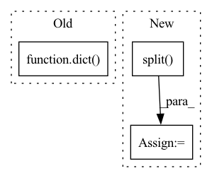

Pattern ID :20629
Before Change
d = {}
if PY3:
// Is some not understood cases, the subprocess never finish.
d = dict(timeout=5*60)
p = subprocess.Popen("mpiexec -np 2 python " + theano_root +
"tensor/tests/_test_mpi_roundtrip.py",
stdin=subprocess.PIPE,
stdout=subprocess.PIPE,After Change
theano_root = theano.__file__.split("__init__")[0]
env = os.environ.copy()
flags = env["THEANO_FLAGS"]
keep_flags = ",".join((f for f in flags.split( ",") if not f.startswith("init_gpu_device")))
env["THEANO_FLAGS"] = keep_flags
p = subprocess.Popen("mpiexec -np 2 python " + theano_root +
"tensor/tests/_test_mpi_roundtrip.py",
stdin=subprocess.PIPE,In pattern: SUPERPATTERN
Frequency: 3
Non-data size: 3
Instances Fragment ID: 66483778
Project Name: Theano/Theano
Commit Name: df1715e2108d52af29622c07ab73bfaba0cb4a99
Time: 2017-10-13
Author: abergeron@gmail.com
File Name: theano/tensor/tests/test_mpi.py
M Class Name: AnonimousClass
N Class Name: AnonimousClass
M Method Name: test_mpi_roundtrip(0)
N Method Name: test_mpi_roundtrip(0)
M Parent Class:
N Parent Class:
M File Name: theano/tensor/tests/test_mpi.py
N File Name: theano/tensor/tests/test_mpi.py
M Start Line: 49
M End Line: 53
N Start Line: 49
N End Line: 52
Before Change
bx_o = [b[o] for b, o in zip(boxes, bo)]
indices = self.matcher(bx_h, bx_o, objects, prior, logits, targets)
return dict(
interaction_loss=self.interaction_loss(bx_h, bx_o, indices, prior, logits, targets)
)
def box_cxcywh_to_xyxy(x):
x_c, y_c, w, h = x.unbind(-1)
b = [(x_c - 0.5 * w), (y_c - 0.5 * h),After Change
bx_o = [b[o] for b, o in zip(boxes, bo)]
bx_h_post, bx_o_post = self.box_pair_coder.decode(torch.cat(bx_h), torch.cat(bx_o), bbox_deltas)
bx_h_post = bx_h_post.split(n); bx_o_post = bx_o_post.split( n)
indices = self.matcher(bx_h_post, bx_o_post, objects, prior, logits, targets)
loss_dict = {"focal_loss": self.interaction_loss(n, indices, prior, logits, targets)} Fragment ID: 66483779
Project Name: fredzzhang/upt
Commit Name: def79003d35c81f7efcbcdb738042ec18038995d
Time: 2021-10-28
Author: frederic.zhang@anu.edu.au
File Name: ops.py
M Class Name: SetCriterion
N Class Name: SetCriterion
M Method Name: forward(9)
N Method Name: forward(8)
M Parent Class: nn.Module
N Parent Class: nn.Module
M File Name: ops.py
N File Name: ops.py
M Start Line: 277
M End Line: 283
N Start Line: 305
N End Line: 322
Before Change
{
"url": subset_path,
"format": extractor_type,
"options": dict( extra_params) ,
})
return projectAfter Change
subset_path = config["url"]
extractor_type = config["format"]
task = extractor_type.split( "_") [1]
opts = dict(config.get("options") or {})
opts.update(extra_params) Fragment ID: 66483773
Project Name: openvinotoolkit/datumaro
Commit Name: 839ca35beaf8e5f11efcb86d9cfd03c693d8b9bb
Time: 2021-06-09
Author: maxim.zhiltsov@intel.com
File Name: datumaro/plugins/voc_format/importer.py
M Class Name: VocImporter
N Class Name: VocImporter
M Method Name: __call__(2)
N Method Name: __call__(2)
M Parent Class: Importer
N Parent Class: Importer
M File Name: datumaro/plugins/voc_format/importer.py
N File Name: datumaro/plugins/voc_format/importer.py
M Start Line: 47
M End Line: 53
N Start Line: 30
N End Line: 44